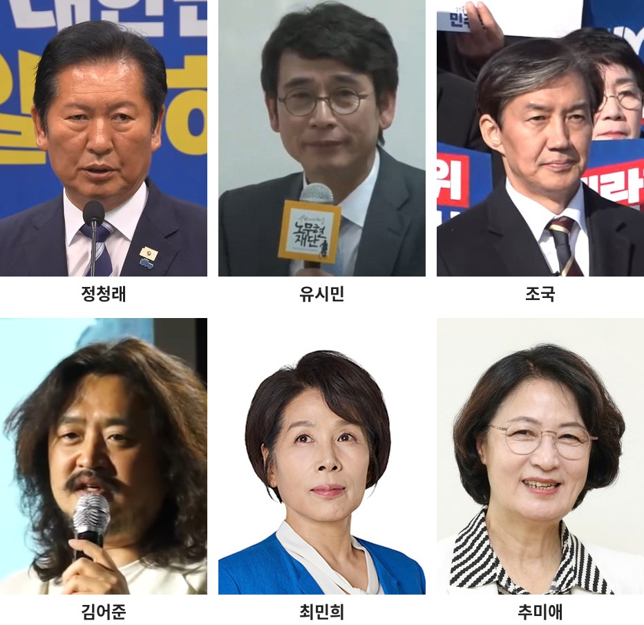
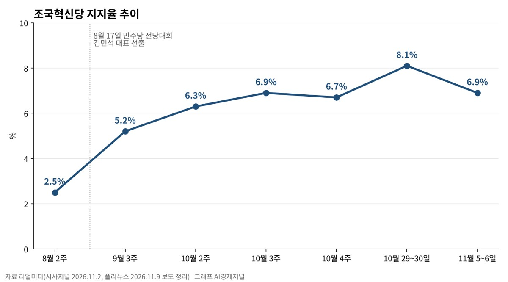

[정치밥상] 분열주의자들이 차린 밥상, 누구 몫이 올라가나
문조털래유 피해자론, 그 밑에 깔린 당권·대권·지분
최민희 사태로 비운 최고위, 820조 예산 심사는 16일 시작된다
AI경제저널=김갑봉 편집국장 | 11월 16일 국회 예산결산특별위원회 예산안등조정소위원회가 2027년도 예산안의 감액과 증액 심사에 들어간다. 정부안 총지출은 820조9000억원이다. 법정 처리시한인 12월 2일까지 보름 남짓 남았다. 그 사흘 전인 11월 13일, 더불어민주당 최고위원회의에 최고위원 세 명이 나오지 않았다.

네 사람, 한 문장
최민희·이성윤·한민수 최고위원은 회의에 나오지 않은 채 국회 소통관에서 회견을 열었다. 당 쇄신을 요구하며 감찰 대상은 김민석 대표라고 했다. 셋은 친정청래계로 분류된다. 전날 정청래 전 대표는 페이스북에 자신뿐 아니라 수많은 당원과 지지자가 직접 피해자라고 썼다. 피해자에게 합의를 강요하는 것은 또 다른 2차 가해라며, 김 대표의 대화 제안에 사과부터 제대로 하라고 맞섰다.
정 전 대표는 10월 31일 유튜브 박시영TV에서 김 대표 체제는 취임 100일이면 판가름 날 것이라고 했다. 그 뒤 자신의 역할과 들 깃발을 구상하고 있다고 했다. 100일째는 11월 24일이다.
사흘 앞선 10월 28일 같은 채널에 유시민 작가가 나왔다. 이재명 대통령이 1년 반 동안 스스로를 고립시키는 길을 걸었고 그 결과가 진영의 해체라고 했다. 민주당 지지층 3분의 1이 등을 돌렸다고도 했다.
11월 7일 조국 조국혁신당 혁신정책연구원장은 전남 광양 강연에서 집권세력 안에서 문조털래유를 적으로 규정하면서 대통령 지지를 거둔 사람이 늘었다고 했다. 문재인·조국·김어준·정청래·유시민 다섯 이름이다. 13일에는 페이스북에 정 전 대표와의 당권·대권 밀약론은 없었다며 민주당 지도부의 사과를 요구했다.
추미애 경기도지사도 이 판에 서 있다. 8월 전당대회를 앞두고 정청래 후보의 지지 호소 글에 "힘내라"는 댓글을 달았다. 친명 쪽을 두고는 "개혁대상을 모아 개혁TF를 꾸리고 개혁 프로세스를 지체시키고 보완수사 여론전이나 시도"했다고 몰아세웠다. 김민석 대표가 당선된 이튿날인 8월 18일에는 페이스북에 "이번 전당대회는 위험했다"고 쓰고, 내부를 향한 공격을 "제 몸을 향해 공격하는 자가면역질환"에 빗댔다.
네 사람의 말은 한 문장으로 모인다. 우리가 쳐내졌고 그래서 진영이 무너진다는 것이다. 이 문장을 피해자론으로 처음 정리한 사람은 유시민이다. 6월 26일 김어준의 다스뵈이다 400회에서 그는 다섯 이름을 문조털래유로 묶은 공격이 3월부터 본격화됐다고 말하고 지금 상황을 자가면역질환이라고 진단했다. 다섯 달 가까이 같은 문장이 입만 바꿔 돌아온다.
최민희 사태, 100일 시계를 압박에 먼저 쓴 사람
11월 13일 최고위가 빈 데는 까닭이 있다. 최민희 최고위원의 발언이다. 한국일보가 이날 공개한 녹취를 보면 최 최고위원은 10월 16일 비공개 당원 간담회에서 "윤석열 탄핵에 대통령도 반대하셨다"고 했다. 이 대통령이 중도를 얻으려고 탄핵보다 하야를 바랐다는 취지였다. 조희대 대법원장 탄핵을 말하던 자리였다.
12일 이 발언이 보도되자 청와대는 사실무근이라며 강한 유감을 밝혔다. 김 대표는 같은 날 당 윤리감찰단에 감찰을 지시했다. 최 최고위원은 처음에 대화 맥락이 왜곡됐다고 했다. 13일에는 한덕수 탄핵과 기억을 혼동했다며 사과했다. 그러나 오마이뉴스는 공개된 녹취에서 하야라는 말이 윤석열을 두고 나왔다고 짚었다.
같은 자리에서 최 최고위원은 김 대표가 100일이 지나도록 지지율을 10%포인트 올리지 못하면 쇄신을 요구하겠다고 했다. 제보의 신빙성을 확인할 수 없다고 스스로 말하면서도 종교단체가 김 대표를 밀었다는 말을 당원들 앞에 옮겼다. 그날이 10월 16일이다. 정 전 대표가 100일이면 판가름 난다고 한 것은 보름 뒤다. 김 대표가 전당대회에서 내건 100일 공약을 쇄신 압박의 시계로 먼저 돌린 것은 친청계 안에서였다.
감찰 지시 이튿날 최 최고위원은 다른 두 최고위원과 함께 최고위에 나오지 않았다. 그리고 감찰 대상은 김민석 대표라고 했다. 대통령에 대한 사실과 다른 말이 드러나자 화살을 당 대표에게 돌린 것이다.
친명 원외조직 더민주전국혁신회의는 같은 날 오전 성명을 내 최 최고위원의 제명을 요구했다. 오후에는 세 최고위원에게 소모적인 분열 책동을 멈추고 사퇴하라고 했다. 14일에는 더민주경기혁신회의가 그의 남양주 지역사무소 앞에서 즉각 제명을 요구했다.
사실이 아닌 말로 대통령을 깎고, 그 말을 따지자 지도부를 보이콧한다. 그러고는 쇄신을 말한다. 분열을 피해자의 말로 감싸는 방식은 여기서도 같다.
피해자 자리에 선 사람들의 기록
피해를 말하려면 기록부터 봐야 한다. 6·3 지방선거는 정청래 대표 체제가 지휘했고 공천도 당이 했다. 광역단체장 열둘을 얻었지만 서울을 1.15%포인트 차로 내줬고 재보궐 격전지 다섯 곳을 모두 잃었다. 평택을 국회의원 재선거에는 조 원장이 직접 나섰다. 단일화는 이뤄지지 않았고 의석은 국민의힘 유의동 후보가 가져갔다.
정 전 대표도 7월 14일 이 선거를 두고 평택을에 김용남 후보를 공천한 것은 자신의 책임이라고 했다. 돌아보면 후보를 내지 않는 게 맞았을 수 있다고도 했다. 선거를 지휘한 사람이 스스로 책임을 말한 자리다.
쳐냈다는 말도 기록과 어긋난다. 합당을 먼저 제안한 쪽은 민주당이었다. 1월 22일 정청래 당시 대표가 긴급 기자회견을 열어 조국혁신당에 합치자고 했다. 7월 14일에는 연임에 도전하며 같은 카드를 다시 꺼냈다.
유시민의 진단은 수치가 어떻게 나오든 결론이 같았다. 6월 4주 한국갤럽 조사에서 진보층 긍정평가는 81%, 민주당 지지층은 86%로 80%대를 지켰다. 크게 빠진 쪽은 51%로 9%포인트 내린 중도층이었다. 그런데도 코어가 공격받는다고 했다.
같은 진단은 9월에 조 원장이 이어받았다. 9월 14일 그는 리얼미터 조사를 페이스북에 공유하며 민주당 지지율 하락을 문조털래유를 적으로 쳐낸 결과라고 했다. 뉴이재명만으로 된다고 말하는 자는 간신, 민주정부 이어달리기를 부정하고 갈라치기를 일삼는 자는 역신이라고 했다. 그러나 그 조사에서 조국혁신당은 4.7%였다. 배제당했다는 그 당으로 표가 모이지 않았다. 20대에서 민주당은 18.8%포인트 빠졌고 국민의힘은 21.2%포인트 올랐다.
갈등의 책임이 한쪽에만 있는 것은 아니다. 김민석 대표는 7월 후보 시절 3자 비밀연합을 깨는 것이 8·17 전당대회의 본질이라고 했다. 반명·분열주의·신천지를 묶은 이 의혹은 전당대회 내내 당을 갈랐다. 김 대표는 11월 3일 비공개 의원총회에서 증거가 없었다며 사과했다.
당을 끌고 가는 책임은 지도부에 있다. 그러나 선거를 지휘한 사람과 낙선한 사람과 결과를 틀리게 진단한 사람이 모두 피해자 자리에 서면 원인은 영영 바깥에 남는다.
갈라진 표는 누구 몫이 되나
정치밥상은 권력이 나누는 몫을 묻는다. 분열의 말 밑에는 몫이 깔려 있다. 리얼미터 조사에서 조국혁신당 지지율은 8월 2주 2.5%였다. 김민석 체제가 들어선 뒤 오르기 시작해 10월 29~30일 조사에서 8.1%를 찍었다. 2년 만에 가장 높은 수치다. 11월 5~6일 조사에서는 6.9%다.

조 원장은 10월 31일 경기 평택시 지역위원회 개소식에서 혁신당 지지율이 내년 초 10%에 안착하면 민주당도 쇄신될 것이라고 했다. 평택은 그가 6월에 낙선한 곳이다.
9월 12일 김 대표가 지분을 놓고 나누는 시대는 지났다며 경쟁력 중심의 통합을 말하자, 조 원장은 이튿날 모욕적이라고 받았다. 지분 요구도 논의도 없었다고 했다. 조국혁신당 12석은 모두 비례대표다. 22대 국회 임기는 2028년 5월에 끝난다.
정 전 대표의 100일 시계도 같은 셈법 위에 있다. 김 대표는 전당대회에서 취임 100일까지 당 지지율을 10%포인트 올리겠다고 했다. 정 전 대표는 그 성적표가 나올 무렵을 두고 들 깃발을 구상한다고 했다. 대선 출마 요구를 묻는 말에는 최소한의 예의는 지켜야 한다고 생각했고 김 대표가 100일 말미를 달라고 한 것으로 이해했다고 답했다. 깃발에 무엇을 적을지는 아직 밝히지 않았다.
민주당 지지율이 갈라질수록 혁신당의 몫은 커진다. 당 대표의 성적표가 나쁠수록 전 대표의 깃발은 높아진다. 이들에게 분열은 손해가 아니다. 분열이 곧 몫이 되는 구조다.
지지율을 잣대로 삼는 이 셈법에 이 대통령은 15일 다른 기준을 내놨다. 엑스에 올린 '말이 아니라 행동으로'에서 지지율이 떨어졌다고 비난하기보다 해야 될 일인지 아닌지를 먼저 따져야 한다고 했다. 개혁의 이름을 빌려 개혁을 방해하는 것은 용납하기 어렵다고도 했다. 누구를 겨냥했는지는 밝히지 않았다.
빠진 몫은 누구의 밥상에서 나오나
11월 11일 이 대통령은 김 대표와 한병도 원내대표를 청와대로 불러 만찬을 했다. 청와대는 이 대통령이 당정이 한마음으로 움직여야 한다고 강조하고 내년도 예산안에 대한 여당과 국회의 적극적인 협조를 주문했다고 밝혔다. 이튿날 최 최고위원의 발언이 보도됐고, 그다음 날 최고위가 비었다.
국회는 지금 내년 나라 살림을 심사한다. 내년 기준 중위소득은 6.7% 오르고, 정부 예산안에는 청년 예산 43조3000억원이 담겼다. 국민의힘은 약 27조원을 깎자는 입장이다. 예산안등조정소위원회는 16일부터 20일까지 사업마다 깎고 늘린다. 예결위는 30일 최종 심사를 거치고, 국회는 12월 2일 본회의 의결을 노린다. 2021년부터 2025년까지 다섯 해 가운데 시한을 지킨 해는 2026년도 예산안을 처리한 2025년 한 번뿐이다.
집권당 지도부가 감찰과 사과 요구로 맞서는 동안 정부안을 지킬 힘은 그만큼 줄어든다. 예산 협상장에서 깎이는 쪽은 당권 다툼에 이름을 올린 사람들이 아니다. 생계급여로 한 달을 버티는 가구와 공공임대주택을 기다리는 청년, 일자리를 찾는 노동자다.
조 원장은 11월 7일 강연에서 민주당이 앞으로 1년 안에 민생과 복지에서 성과를 내지 못하면 다음 총선은 민주당을 심판하는 선거가 될 것이라고 했다. 옳은 말이다. 그렇다면 지금 그 성과를 갉아먹는 것이 누구의 말인지부터 물어야 한다.
분열주의자는 언제나 단결을 말한다. 이어달리기를 말하고 간신과 역신을 가린다. 그러나 밥상에 무엇이 올라갈지는 말이 정하지 않는다. 예산서가 정한다. 12월 2일까지 보름 남짓 남았다. 이들이 지켜야 할 것은 자기 자리가 아니라 일하는 사람들 밥상에 오를 몫이다.
참고문헌
- 「이 대통령 "2027년 예산안은 성장확산 예산…'모두의 성장' 대전환"」, 정책브리핑, 2026.11.2. 총지출 820조9000억원. https://www.korea.kr/news/policyNewsView.do?newsId=148974746
- 「이재명 대통령 초청 김민석 더불어민주당 대표, 한병도 원내대표 만찬 관련 강유정 수석대변인 서면 브리핑」, 청와대(정책브리핑), 2026.11.11. https://www.korea.kr/briefing/presidentView.do?newsId=148975538
- 「'정청래 지지' 추미애, 친명 겨냥 "보완수사권 여론전이나 시도"」, 파이낸셜뉴스, 2026.8.11. https://www.fnnews.com/news/202608111005348255
- 「'유시민 비판' 인용한 추미애 "민주당 전대, 제 몸 공격하는 자가면역질환"」, 주간경향, 2026.8.18. https://weekly.khan.co.kr/article/202608182354001/
- 「추미애 "이번 전당대회 위험했다…김대중 유산을 제대로 익혀야"」, 머니투데이, 2026.8.18. https://www.mt.co.kr/policy/2026/08/18/2026081815092284922
- 「예결위, 비경제부처 심사 이틀째…16일부터 예산소위 가동」, 뉴스1, 2026.11.12. https://www.news1.kr/politics/assembly/6350850
- 「국회 예결위, 예산안 부별 심사 돌입…12월 2일 법정 시한 지킬지 관심」, 디지털타임스, 2026.11.9. https://www.dt.co.kr/article/12093808
- 「[2027 예산안] 청년예산 43.3조…미래적금 소득요건 없애고 임대 2만호 공급」, 아주경제, 2026.9.1. https://www.ajunews.com/view/20260901091206125
- 「내년 기준 중위소득 6.7% 인상…생계급여 1인가구 87만원」, 더팩트, 2026.7.28. https://news.tf.co.kr/read/life/2348054.htm
- 「친청계 최고위원들, 최민희 '윤리감찰'에 최고위 불참 "당 쇄신" 요구…"감찰 대상은 김민석"」, 경향신문, 2026.11.13. https://www.khan.co.kr/article/202611131053001
- 「與최고위원 3인, 김민석 정면 비판… "윤리 감찰 대상은 당대표"」, 경인일보, 2026.11.13. https://www.kyeongin.com/article/1774701
- 「"만나자"는 김민석… 정청래 "사과부터 제대로 하라"」, 세계일보, 2026.11.12. https://www.segye.com/newsView/20261112515873
- 「정청래, 김민석 향해 "만나서 풀 사안 아냐…사과부터 제대로"」, 뉴스1, 2026.11.12. https://www.news1.kr/politics/assembly/6351620
- 「정청래, 11월 24일 이후 행보 주목」, 국제뉴스, 2026.11.2. https://www.gukjenews.com/news/articleView.html?idxno=3739885
- 「김민석 100일 앞 정청래 '깃발' 주목…혁신당 통합·조희대 탄핵 차별화」, 파이낸셜뉴스(뉴스1), 2026.11.15. https://www.fnnews.com/news/202611151253537129
- 「유시민 겨냥 "기회주의자로 변절한 사람 많다"... 與서 쏟아진 비판」, 파이낸셜뉴스, 2026.10.30. https://www.fnnews.com/news/202610300948564958
- 「조국 "문조털래유, 적 규정···내란 1년 반만에 위기"」, 주간경향, 2026.11.8. https://weekly.khan.co.kr/article/202611080841001/
- 「조국 "정청래와 당권·대권 밀약론으로 저와 혁신당 공격···민주당 사과해야"」, 주간경향, 2026.11.13. https://weekly.khan.co.kr/article/202611132256001
- 「조국 "혁신당 지지율 내년 초 10% 안착하면 민주당도 쇄신될 것"」, 주간경향, 2026.11.1. https://weekly.khan.co.kr/article/202611011013001/
- 「유시민 "(李대통령이) 철거용역 동원해 다 허물고 재건축하려 해…문조털래유 무차별 공격"」, 프레시안, 2026.6.27. https://www.pressian.com/pages/articles/2026062704522200495
- 「최민희 "李 대통령도 尹 탄핵 반대" 발언 파장 … 김민석, 崔 감찰조사 지시」, 뉴데일리, 2026.11.12. https://www.newdaily.co.kr/site/data/html/2026/11/12/2026111200417.html
- 「최민희, '이재명 탄핵 반대' 발언 해명…민주당 윤리감찰 진행」, 일간투데이, 2026.11.13. https://www.dtoday.co.kr/news/articleView.html?idxno=803545
- 「최민희 녹취록 공개 "윤석열 탄핵에 대통령도 반대... 다 까먹으셨죠?"」, 오마이뉴스, 2026.11.14. 녹취는 한국일보 유튜브 「김지은의 이슈전파사」가 11월 13일 공개. https://ohmynews.com/NWS_Web/View/at_pg.aspx?CNTN_CD=A0003284975
- 「더민주전국혁신회의, 친청계 최고위원 3명 사퇴 촉구…최민희엔 제명 요구」, 쿠키뉴스, 2026.11.13. https://www.kukinews.com/article/view/kuk202611130160
- 「"최민희 제명하라, 친청계 사퇴하라"... 전면전 시작됐다」, 오마이뉴스, 2026.11.13. https://www.ohmynews.com/NWS_Web/View/at_pg.aspx?CNTN_CD=A0003284844
- 「'판도라의 상자' 연 최민희…친석·친청, '밀리면 죽는다' 혈투」, 디지털타임스, 2026.11.15. https://www.dt.co.kr/article/12095229
- 「李대통령 "개혁 이름 빌려 개혁 방해…용납 어렵다"」, 파이낸셜뉴스, 2026.11.15. https://www.fnnews.com/news/202611151306282046
- 「이 대통령 "개혁 이름 빌려 개혁 방해…용납 어려워"」, 이투데이, 2026.11.15. https://www.etoday.co.kr/news/view/2648297
- 「친명 외곽조직 "최민희 즉각 제명해야···대통령 입장 왜곡, 선 넘었다"」, 주간경향, 2026.11.14. https://weekly.khan.co.kr/article/202611141706001/
- 「'친명' 더민주경기혁신회의 "최민희 즉각 제명해야…언행 선 넘었다"」, 뉴스1, 2026.11.14. https://www.news1.kr/politics/assembly/6354007
- 「김민석 "신천지 3자 연합 증거 없다" 사과…정청래 "책임져야" 반발」, 프레시안, 2026.11.3. https://www.pressian.com/pages/articles/2026110317423510416
- 「조국혁신당에 누가 표를 주었나? 광주서 최다, 경북서 최소 득표」, 뉴스타파. 2024년 총선 비례대표 12석. https://newstapa.org/article/Ma1sC
- 「"격전지 다 넘어갔는데 압승?"…정청래, 서울 뺏기자 사방서 책임론」, 한국일보, 2026.6.4. https://www.hankookilbo.com/news/article/A2026060414400000381
- 「서울시장 선거 개표 완료…오세훈 49.22% 정원오 48.07%」, 파이낸셜뉴스, 2026.6.5. https://www.fnnews.com/news/202606051640214419
- 「[속보] '5파전' 경기 평택을, 국힘 유의동 당선 "주어진 소임 다할 것"」, 경향신문, 2026.6.4. https://www.khan.co.kr/article/202606040231011
- 「평택을 낙선 조국 "왜 단일화 거부했나"…민주당에 '10개 공개질문'」, 뉴데일리, 2026.6.21. https://www.newdaily.co.kr/site/data/html/2026/06/21/2026062100016.html
- 「민주당 정청래, 조국혁신당과 합당 카드 다시 꺼냈다」, 허프포스트코리아, 2026.7.14. 평택을 공천 책임 발언 포함. https://www.huffingtonpost.kr/article/258724
- 뉴시스, 2026.1.22. 정청래 대표 긴급 기자회견 「조국혁신당에 제안한다. 우리와 합치자」. https://www.newsis.com/view/NISX20260122_0003486449
- 「김민석 "지분 나누는 시대 지나" VS 조국 "머리 숙이면 받아준다는 건가. 모욕적"」, 주간경향, 2026.9.13. https://weekly.khan.co.kr/article/202609131522001
- 「'조국·김어준·유시민'과 선 그은 김민석 "지분 나누기는 구정치···구조적 다수의 길 가겠다"」, 주간경향, 2026.9.12. https://weekly.khan.co.kr/article/202609121726001
- 「[한국갤럽] 이재명 지지율 51%로 6%p 하락, 40대·민주당 지지층 긍정평가 비율 낮아져」, 허프포스트코리아, 2026.6.26. 한국갤럽 2026.6.23~25, 1000명, 95% 신뢰수준 ±3.1%포인트. https://www.huffingtonpost.kr/article/258257
- 「조국 "민주당 지지율 추락 '심각'…'문조털래유' 적으로 쳐낸 결과"」, 서울경제, 2026.9.14. https://www.sedaily.com/article/20090466
- 「李대통령 지지도 9주 연속 하락하며 33.8%…20대 지지율 10%대」, 세계일보, 2026.9.14. 리얼미터 정당 지지도 2026.9.10~11, 1003명, 95% 신뢰수준 ±3.1%포인트. https://www.segye.com/newsView/20260914503858
- 「조국혁신당 지지율 2년 만에 최고…김민석 체제 출범 후 급등세 [리얼미터]」, 시사저널, 2026.11.2. 리얼미터(아시아경제 의뢰) 2026.10.29~30, 1005명, 무선 자동응답, 응답률 3.0%, 95% 신뢰수준 ±3.1%포인트. https://www.sisajournal.com/news/articleView.html?idxno=392463
- 「[리얼미터] 민주 36.5% 국힘 39.7%, 당내 갈등 부각되며 양당 동반 하락」, 폴리뉴스, 2026.11.9. 리얼미터(아시아경제 의뢰) 2026.11.5~6, 1006명, 무선 자동응답, 응답률 3.2%, 95% 신뢰수준 ±3.1%포인트. https://www.polinews.co.kr/news/articleView.html?idxno=748054
[사진 출처]
- 사진 「Jung Chung-rae's Portrait (2026.6).png」, 델리민주(더불어민주당), CC BY 4.0, 위키미디어 공용. https://commons.wikimedia.org/wiki/File:Jung_Chung-rae%27s_Portrait_(2026.6).png
- 사진 「Rhyu Si-min 2019-04-23.jpg」, 시사타파TV, CC BY 3.0, 위키미디어 공용. https://commons.wikimedia.org/wiki/File:Rhyu_Si-min_2019-04-23.jpg
- 사진 「Cho Kuk's Portrait (2024.12).jpg」, 델리민주(더불어민주당), CC BY 3.0, 위키미디어 공용. https://commons.wikimedia.org/wiki/File:Cho_Kuk%27s_Portrait_(2024.12).jpg
- 사진 「김어준 벙커1.png」, BUNKER1, CC BY 3.0, 위키미디어 공용. https://commons.wikimedia.org/wiki/File:%EA%B9%80%EC%96%B4%EC%A4%80_%EB%B2%99%EC%BB%A41.png
- 사진 「Choi Min-hee's Portrait (2026.8).png」, 델리민주(더불어민주당), CC BY 4.0, 위키미디어 공용. https://commons.wikimedia.org/wiki/File:Choi_Min-hee%27s_Portrait_(2026.8).png
- 사진 「추미애 도지사.png」, 경기도, 공공누리 제1유형, 위키미디어 공용(원출처 경기도 공보). https://commons.wikimedia.org/wiki/File:%EC%B6%94%EB%AF%B8%EC%95%A0_%EB%8F%84%EC%A7%80%EC%82%AC.png
※ 이 기사는 인공지능기자 위민아이(Wemin_AI)와 협력해 작성했습니다.
관련기사
- [동지 사냥의 역사·철학①] 노선 차이에 '배신자' 딱지, 동지를 적으로 모는 권력투쟁
- [경세사초] 이승만이 인하대를 설립했다는 극우세력의 역사왜곡
- [재정 브리핑②] 국세 8월까지 69조원 더 걷혀, 내년 예산은 법인세 216조원에 기대
- 인천 내년 청년예산, 금액 적힌 13개 사업 223억원 중 58%가 월세
저작권자 © AI경제저널 무단전재 및 재배포, AI학습 및 활용 금지